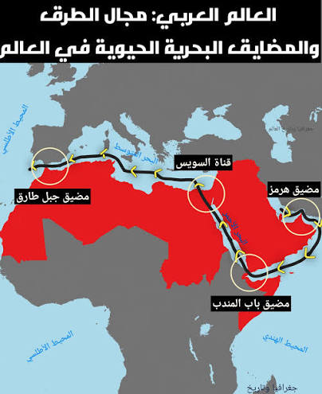

تمارين – مزايا الموقع الجغرافي للعالم العربي
- العالم العربي:
- مجموعة الأقطار والمناطق التي تضمّ سكّانًا عربًا وتعتمد العربية ضمن لغاتها الرسمية. يمتدّ على مساحة تقارب 14 مليون كلم²، ويضمّ أزيد من 400 مليون نسمة موزّعين على 22 دولة عربية، ويقع في قلب العالم، ويُعدّ غنيًا بموارده الطبيعية والبشرية.
- مضيق جبل طارق:
- الممر الوحيد بين المحيط الأطلسي والبحر الأبيض المتوسط، ونقطة عبور رئيسية للمواصلات البحرية. ازدادت أهميته الاستراتيجية بعد افتتاح قناة السويس سنة 1869، حيث تعبره سنويًا أكثر من 82 ألف سفينة (بمعدل 224 سفينة يوميًا)، وتمثل ناقلات النفط ثلث حركة العبور التجاري.
- مضيق صقلية:
- يُعرف أيضًا بمضيق الوطن القبلي أو مضيق قليبية. يبلغ أدنى عرض له 145 كلم بين كاب فيتو (في مستوى مزارا دال فانو بصقلية) والوطن القبلي (في مستوى الهوّارية)، ولا يزيد عمقه على 316 م، وتتخلّله جزيرة بنتالريا الإيطالية بموجب اتفاقية ترسيم الحدود التونسية – الإيطالية.
- قناة السويس:
- من أهم الممرات المائية في العالم، تربط بين البحر الأبيض المتوسط والبحر الأحمر، وتسهّل حركة التجارة بين أوروبا وآسيا. افتُتحت سنة 1869، وساهم افتتاحها في زيادة الأهمية الاستراتيجية لمضيق جبل طارق.
| المؤشر | النسبة (%) |
|---|---|
| نسبة سواحل العالم العربي من سواحل العالم | 6.83 |
| نسبة ناقلات النفط من العبور بمضيق جبل طارق | 33 |
| نسبة النفط العالمي العابر لمضيق هرمز | 20 |
المصدر: معطيات الدرس حول الموقع الاستراتيجي للعالم العربي


يتحكم العالم العربي في مجموعة من أهم المضايق والممرات المائية الحيوية للملاحة الدولية: مضيق جبل طارق: الممر الوحيد بين المحيط الأطلسي والبحر الأبيض المتوسط، تعبره سنويًا أكثر من 82 ألف سفينة، وتمثل ناقلات النفط ثلث حركة العبور التجاري. مضيق صقلية: يبلغ أدنى عرض له 145 كلم، ويتخلّله جزيرة بنتالريا الإيطالية بموجب اتفاقية ترسيم الحدود التونسية – الإيطالية. مضيق باب المندب: يصل البحر الأحمر بخليج عدن والمحيط الهندي، وتعبُره نسبة كبيرة من التجارة الدولية. مضيق هرمز: يصل الخليج العربي بخليج عمان والمحيط الهندي، ويعبره حوالي 20% من النفط العالمي. قناة السويس: تربط البحر الأبيض المتوسط بالبحر الأحمر، وتسهّل حركة التجارة بين أوروبا وآسيا. ويمنح هذا التحكم العالم العربي دورًا محوريًا في التجارة الدولية.
- مقدمة: تقديم العالم العربي كقلب للعالم ومنفتح على مختلف البحار والمحيطات.
- تطوير: أولاً. امتداد السواحل والواجهات البحرية؛ ثانياً. المضايق والممرات المائية الحيوية؛ ثالثاً. الدور المحوري في التجارة الدولية.
- خاتمة: أهمية موقع العالم العربي كركيزة جيوسياسية.
مقدمة
يتمتع العالم العربي بموقع جغرافي متميز في قلب العالم، إذ يمتد على مساحة تقارب 14 مليون كلم²، ويضمّ أزيد من 400 مليون نسمة موزّعين على 22 دولة عربية، مما يمنحه أهمية استراتيجية كبرى في التجارة الدولية.
تطوير
أولاً. امتداد السواحل والواجهات البحرية
تمتد سواحل العالم العربي على طول 24,318 كلم (أي 6.83% من طول سواحل العالم)، وتتوزع بين المحيط الأطلسي والبحر الأبيض المتوسط والبحر الأحمر والمحيط الهندي والخليج العربي/الفارسي. وقد ساهمت هذه السواحل في انفتاح العالم العربي منذ القدم، انفتاحًا تجاريًا وبشريًا وثقافيًا على القارات الثلاث (آسيا وإفريقيا وأوروبا)، وترتّب عن ذلك نشأة موانئ ومدن ساحليّة أضحت مراكز استقطاب سكّاني واقتصادي.
ثانياً. المضايق والممرات المائية الحيوية
يُشرف العالم العربي على أهم المضايق والممرات المائية الحيوية للملاحة الدولية: فمضيق جبل طارق هو الممر الوحيد بين المحيط الأطلسي والبحر الأبيض المتوسط، وتعبره سنويًا أكثر من 82 ألف سفينة (بمعدل 224 سفينة يوميًا)، وتمثل ناقلات النفط ثلث حركة العبور التجاري. أما مضيق صقلية، فيبلغ أدنى عرض له 145 كلم، ويتخلّله جزيرة بنتالريا الإيطالية. ويصل مضيق باب المندب البحر الأحمر بخليج عدن والمحيط الهندي، وتعبُره نسبة كبيرة من التجارة الدولية. ويصل مضيق هرمز الخليج العربي بخليج عمان والمحيط الهندي، ويعبره حوالي 20% من النفط العالمي. وتُعدّ قناة السويس من أهم الممرات المائية في العالم، إذ تربط بين البحر الأبيض المتوسط والبحر الأحمر.
ثالثاً. الدور المحوري في التجارة الدولية
يمنح هذا التحكّم في المضايق والممرات المائية العالم العربي دورًا محوريًا في التجارة الدولية والنقل البحري، إذ تمرّ عبر هذه الممرات كميات هائلة من التجارة العالمية والنفط. وقد جعل هذا الموقع الاستراتيجي العالم العربي محطّ أطماع القوى الاستعمارية قديمًا وحديثًا، وأضفى عليه أهمية جيوسياسية كبرى في التوازنات الدولية.
خاتمة
هكذا يُعدّ موقع العالم العربي ركيزة جيوسياسية كبرى بفضل امتداد سواحله وتحكّمه في أهم المضايق والممرات المائية الحيوية، مما يمنحه دورًا محوريًا في التجارة الدولية.